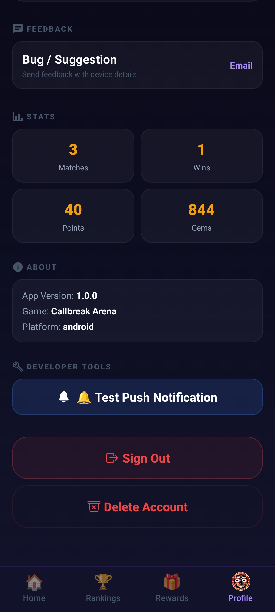
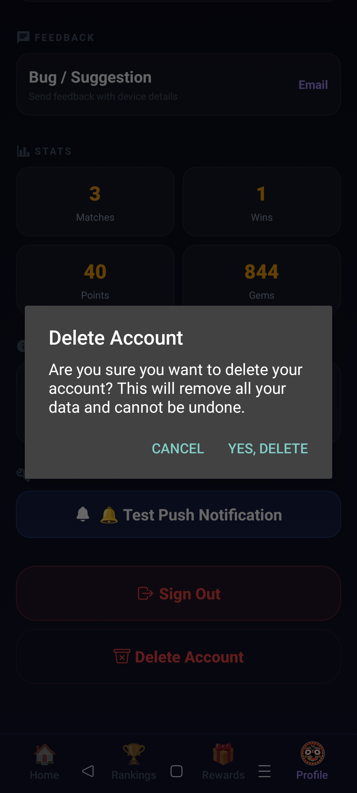

Delete Your Callbreak Arena Account
Callbreak Arena provides an in-app option that allows users to permanently delete their account and associated game data.
How to Delete Your Account
- Open the Callbreak Arena app.
- Go to Profile.
- Tap Delete Account.
- Confirm the deletion request.
- Your account and associated data will be permanently removed.
Step 1: Open Profile Screen

Step 2: Confirm Account Deletion

What Data Will Be Deleted?
- User account information
- Display name and profile information
- Game statistics
- Leaderboard records
- Reward and wallet information
- Game history associated with the account
Data Retention
Account deletion is permanent and cannot be undone.
Any remaining game progress, rewards, gems, points, and profile information will be removed.
Need Help?
If you experience any issues deleting your account, please contact us:
Email: support@callbreakarena.com